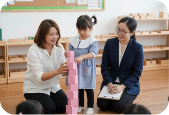

Partnership in Growth
We believe learning thrives through trust. Kinderworld nurtures strong connections between teachers, parents, and children- creating a supportive community for every child’s journey.

years of
excellence
students
graduated
centres
and growing..
We believe learning thrives through trust. Kinderworld nurtures strong connections between teachers, parents, and children- creating a supportive community for every child’s journey.
Children learn through hands-on exploration in a carefully prepared Montessori environment, building independence, curiosity, and a love for learning.
Beyond academics, we focus on the whole child—fostering intellectual, emotional, and character growth to prepare children for life's next steps.